Contents
“Abstract”
Higher category theory lies in the intersection of two major developments of 20th
century mathematics: topology and category theory. It provides a framework for
settings where the morphisms between two objects form not just a set but a
topological space, and is believed to be the best language for modern homological
algebra and sheaf theory by a steadily increasing portion of the mathematical
community.
Despite being a new discipline, higher category theory has already found
spectacular applications across mathematics, such as Lurie’s proof of the cobordism
hypothesis (in Mathematical Physics), and Gaitsgory-Lurie’s work on Weil’s
Tamagawa number conjecture (in Number Theory), not to mention applications
in Geometric Langlands, K-theory, Mirror Symmetry, Knot Theory / Floer
Homology...
This reading seminar will gently introduce some of the main concepts of higher
category theory as developped by Lurie. By the end of the seminar, the student will be
familiar enough with infinity categories that they can navigate texts written in this new
language.
General information
About the presentation
This is a student seminar which means that the students each make one of the
presentations. The presentation should be about 75 minutes long, leaving 15 minutes for
potential questions and discussion.
Students are not required to hand in any written notes. However, students are
encouraged to prepare some notes if they feel it will improve the presentation. This
should be considered seriously, especially if the student has not made many presentations
before.
For example, its helpful to have
- a written copy of exactly what they plan to write on the blackboard, and
- 5-10 pages of notes on the material to help find any gaps in your
understanding.
If notes are prepared I will collect them and give feedback if desired.
The material listed below should be considered as a skeleton of the talk, to be padded
out with other material from the texts or examples that the student finds interesting,
relevant, enlightening, useful, etc.
If you have any questions please feel free to contact me at the email address
above.
NB
About the absence of 1-categories before Talk VI: This seminar will complement the
course “Categories and Homotopy Theory” 19234201, which starts on the 8th of June.
As such, we avoid as much as possible using 1-categories in the classical sense in the first
half of the seminar. Moreover, model categories, simplicial categories, homotopy limits,
etc only appear at the end of the course, after they have appeared in “Categories and
Homotopy Theory”. This means that we lose a very important point of view on the
subject, but on the other hand, it highlights homotopy theoretic tones of the
material.
(*) About the references: Sometimes I insist on mentioning aspects of the theory
which, as stated in the references, go beyond the scope of this course. When I do this,
the reference is marked with a star. This is a warning that the language of
the literature is not what we are using, or that there is a lot of background
material needed to understand the statement as written that we are not going to
cover.
Overview and schedule
I. 24.04. Introduction
Topology studies those aspects of spaces which are preserved by stretching and
bending, but not tearing or gluing. From this point of view, the surface of a
doughnut (with hole) is the same as the surface of a coffee cup (with handle), but
these are both different from the surface of a ball. Similarly, the shape of the
written number 1 is the same as the shape of the written numbers 3, 5, and 7
but different from 6, 0, and 9, and these are different from 8. The shape of 2
and 4 either fall into the first or second groups depending on how you write
them.
A basic tool used to show that two spaces are different, is the fundamental groupoid
π≤1(X) of a space X. This is the set of ways we can move from one point to
another of our space leaving a trail of string. Two paths are considered the
same if we can slide, stretch, or contract the string path of one to the other
without leaving the space, and without moving the start and end points. It is a
groupoid because given two paths, one starting where the other finishes, we get
a third by concatenating them. The groupoid π≤1(X) is not changed under
deformation, so if two spaces have different π≤1’s, we can conclude that one
cannot be obtained from the other by deformation. For example, a circle is
different from a sphere, because every path on a sphere can be contracted to a
point.
The fundamental groupoid only contains information about holes of “dimension ≤ 1”.
It can tell that a figure 8 is different from a figure 0, but not that a sphere is different
from a point. To do this, we should also use paths of fabric between two string
paths. But then we only get “dimension 2” holes, so we should use blocks, etc,
etc.
This is a basic example of an ∞-category: The set of continuous maps □topn → X,
where 0 ≤ n < ∞ and □topn = {(x1,…,xn) ∈ ℝn : 0 ≤ xi ≤ 1}, together with the
information of which maps □topn-1→X are the face of a map □topn→X, and which
maps □topn→X are obtained from a map □topn-1→X by just not moving in one
direction.
The “∞” refers to the fact that we are allowed any n < ∞, and the “category” from
the fact that we can concatenate two maps □topn⇉X if an ending face of one agrees with
a starting face of the other.
II. 08.05. Simplicial sets (Danijela)
In practice, it is often more practical to work with triangles rather than squares. A
simplicial set is an abstract combinatorial object, which mimics the ∞-category of a
topological space: we have a set Kn for every 0 ≤ n < ∞, which we can think of
as maps from an n-dimensional triangle into a space, and various morphisms
δi : Kn → Kn-1,σi : Kn-1 → Kn telling us how the triangles fit together.
In this lecture the basic definitions are given, together with some basic examples.
This lecture will cover the following:
See [Danijela’s notes (scanned pdf), used with permission].
Another useful reference is: arxiv:0809.4221.
III. 15.05. ∞-Categories (Kristian)
Not only do we get a simplicial set from every topological space, but by using the
simplicial set as a recipe to glue various Δtopn together we can get a topological space
from every simplicial set. The first part of this lecture describes how using this
we can transport the notion of when two topological spaces are “the same”
(from the point of view of topology) to define when two simplicial sets are “the
same”.
Not every simplicial set has the “composition” property possessed by simplicial sets of
topological spaces. The second part of this lecture formalises what it means to be
able to “compose” simplicies, and defines ∞-categories. It finishes with the
observation that the simplicial set of morphisms between an ∞-category is again an
∞-category.
This lecture will cover the following:
See [Lecture notes (pdf)].
IV. 22.05. Joins and slice ∞-categories (Arne)
The join of two topological spaces is the topological space we get by adding a path from
every point in one to every point in the other. For example, if one space is a circle, and
the other a point, we get the shape of an icecream cone (without the icecream). This
lecture shows how to define this for simplicial sets. In the case one space is a single point,
the join is called the cone for obvious reasons. Joins are needed for the definition of slice
categories, which are needed for the definition of limits, in the next lecture. The “slice” of
a morphism of topological spaces f : X → Y is something like the space of
pairs (x,γ) where x ∈ X is a point and γ : [0,1] → Y is a path starting from
f(x).
This lecture will cover the following:
See [Arne’s skeleton notes (pdf), used with permission].
Define the right and left cone of a directed graph and a partially ordered
set.
Define the cone of a topological space, and draw the picture [Hat, pp.8-9]. Define the join
of two topological spaces, and draw the picture [Hat, p.9]. Define the join of two
simplicial sets [Gro, Def.2.11], [HTT, Def.1.2.8.1]. Show that there are isomorphisms
Δi⋆Δj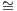Δi+j+1. Define the right cone and left cone of a simplicial set, and describe
them explicitly [Gro Exa.2.14], [HTT, Not.1.2.8.4]. Show that the ∞-categories of the
cones of a directed graph and partially ordered set are the ∞-categories of their cones.
Prove that for any two ∞-categories S,S′, the join S ⋆ S′ is an ∞-category [HTT,
Prop.1.2.8.3].
Define the overcategory C∕p of a map p by its universal property [Gro, Prop.2.17],
[HTT, Prop.1.2.9.2]. Define C∕p explicitly [HTT, Proof of Prop.1.2.9.2]. State
(without proof) that C∕p is an ∞-category [HTT, Prop.1.2.9.3]. Define the
undercategory by a universal property, and explicitly [HTT, Rem.1.2.9.5]. Given a
morphism of topological spaces p : Y → X, explicitly describe the ∞-category
Sing∙(X)∕Sing(p). Do the same for directed graphs and partially ordered sets if there is
time.
V. 29.05. Limits and colimits in ∞-categories (Robert)
Colimits are a vast generalisation and unification of unions and quotients. They are a
way of gluing spaces together. The colimit of a collection of morphisms of ∞-categories
is in a precise sense the “supremum” of this collection. Dually, limits are a
vast generalisation and unification of intersections, fixed points, and kernels.
The limit of a collection of morphisms of ∞-categories is in a precise sense
the “infimum” of this collection. (Co)Limits are as basic to category theory as
convergence is to analysis, but we will most immediately use them to define stable
∞-categories. If we do the Seifert-van Kampen Theorem they will appear there
too.
This lecture will cover the following:
See [Robert’s notes (pdf), used with permission].
Define the ∞-category of topological
spaces.
Recall the definition of weak equivalence and Kan fibration from Talk III. Claim that a
morphism of simplicial sets is a Kan fibration and a weak equivalence if and only if it is a
trivial fibration (=trivial Kan fibration) in the sense of [HTT, Exa.2.0.0.2]. Recall that
a morphism which is both a weak equivalence and a Kan fibration is called
an acyclic fibration or trivial fibration. Define initial and final objects [Gro,
§2.4], [HTT, §1.2.12.3]. Show that the ∞-category of a partially ordered set has
an initial (resp. final) object if and only if it has a minimal (resp. maximal)
element. (Optional) State the equivalent conditions of [Gro, Prop.2.23] (use the
right mapping space [Gro, Rem.16(ii)], [HTT, p.27] as in [HTT, Prop.1.2.12.4]).
Show that the one point topological space is a final object in the ∞-category of
topological spaces. State that a topological space homotopy equivalent to a
one point topological space is a final object. (Optional) Prove this. (Optional)
Find sufficient and necessary conditions for a topological space to be a final
object.
Define colimits and limits [HTT, Def.1.2.13.4]. Observe that initial (resp. final) objects
are colimits (resp. limits) of the empty diagram. Show that limits / colimits in
0-categories (i.e., nerves of partially ordered sets) are infimums / supremums. Define
pushout and pullback squares [Gro, Def.2.29].
Define the homotopy pushout of a diagram Z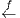X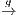Y of topological spaces as
(Y ∐ ([0,1]×X) ∐ Z) modulo the relations f(X) ~{0}×X and g(X) ~{1}×X . Claim
that this gives a pushout square in the ∞-category of topological spaces. (Optional)
Show this claim. Define the homotopy pullback of a diagram Z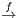X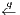Y of
topological spaces as {(z,γ,y) ∈ Z × hom([0,1],X) × Y : γ(0) = f(z),γ(q) = g(y)}.
Claim that this gives a pullback square in the ∞-category of topological spaces.
(Optional) Show this claim. (Optional) Do any / all of the following examples in
the ∞-category of topological spaces: (co)products, (co)equalisers, mapping
(co)telescope.
(Optional) Define cofinal morphisms [HTT, Def.4.1.1.1]. (Optional) State the
equivalent conditions of [HTT, Prop.4.1.1.8]. (Optional) Define left Kan extensions along
full subcategories [HTT, Def.4.3.2.2]. (Optional) State the existence of left Kan
extensions along full subcategories when the target is cocomplete [HTT, Cor.4.3.2.14].
(Optional) Explain why Kan extensions are more complicated along morphisms which
are not full inclusions [HTT, §4.3.3]. (Optional) Define left extensions [HTT, Def.4.3.3.1].
(Optional) Define left Kan extensions in general [HTT, Def.4.3.3.2]. (Optional) State
that the two definitions are compatible [HTT, Prop.4.3.3.5]. (Optional) Explain how
colimits are examples of left Kan extensions. (Optional) Explain how inverse image of
(classical) sheaves along a morphism of topological spaces is an example of a left Kan
extensions.
Reminder. 08.06. “Categories and Homotopy Theory” 19234201 starts.
VI. 12.06. Monoidal ∞-categories (Karl)
Some of the most interesting topological spaces come equipped with a multiplication,
e.g., GLn(ℂ). This defines a “multiplication” on its associated simplicial set. Monoidal
categories are those equipped with a “multiplication”. An important more general case is
the space of loops of a topological space, written ΩX. Here, the composition is not so
straightforward.
Recall that when defining the composition of two paths γ,γ′ : [0,1] → X in a
topological space with γ(1) = γ′(0), we get the composition γ′∘ γ : [0,1] → X by
travelling faster along the first map, then faster along the second map, see [HA,
Beginning of Chap.5]. So there is a space of composition choices, and any choice is
deformable into any other. Recall also that it is important to have this choice, because it
is the only way to have associativity (γ′′∘ γ′) ∘ γ = γ′′∘ (γ′∘ γ). So we want
to keep track of the ∞-category of composition choices of n-paths for each
n = 0,1,…, as well as the many various functors sending a composition choice
of n paths to a composition choice of k paths, for n,k = 0,1,…. In practice
it turns out to be a good idea to use coCartesian fibrations to organise this
data.
Given a morphism f : S → Subsets(Y ) from a set S to the set of subsets of a set Y ,
we can define X = {(s,y) : s ∈ S,y ∈ f(s)} and instead work with the morphism of sets
p : X → S;(s,y) s. We can recover f as p-1, but the organisation of the data is a little
cleaner. This is the idea behind coCartesian fibrations. Instead of a functor S →∞-Cat
from an ∞-category to the ∞-category of ∞-categories, which in general may be
complicated to define and work with, we instead work with a special class of
morphisms of ∞-categories called coCartesian fibrations. These are precisely those
morphisms which are obtained analogously to the way we got p : X → S from
f : S → Subsets(Y ).
s. We can recover f as p-1, but the organisation of the data is a little
cleaner. This is the idea behind coCartesian fibrations. Instead of a functor S →∞-Cat
from an ∞-category to the ∞-category of ∞-categories, which in general may be
complicated to define and work with, we instead work with a special class of
morphisms of ∞-categories called coCartesian fibrations. These are precisely those
morphisms which are obtained analogously to the way we got p : X → S from
f : S → Subsets(Y ).
From this point of view, the ∞-category associated to ΩX is not the assignment of an
∞-category to each n, and a functor to each [n] → [k], but rather, a coCartesian fibration
C → Δop towards the ∞-category associated to the collection of the partially ordered
sets [n].
This lecture will cover the following:
See [Karl’s notes (scanned pdf), used with permission].
Define an inner fibration of simplicial sets [Gro, Def.1.37], [HTT, Def.2.0.0.3]. Define
coCartesian morphisms [Gro, Def.4.12], [HTT, Def.2.4.1.1]. Unwrap this definition (i.e.,
state it in terms of lifting diagrams of inclusions of horns and boundaries of
simplicies) [HTT, Rem.2.4.1.4]. Define coCartesian fibrations [Gro, Def. 4.13], [HTT,
Def.2.4.2.1].
State the following: “Principle. The ∞-category of coCartesian fibrations towards an
∞-category S is equivalent to the ∞-category of functors from S to the ∞-category of
∞-categories” [HTT, Thm.3.2.0.1 and preceding paragraph]*.
More concretely: Observe that if A is an ∞-category, then A→Δ0 is a coCartesian
fibration. Show that given two ∞-categories A0,A1 and a morphism A1 → A0, one can
associate a coCartesian fibration p : NA(Δ1) → Δ1 such that p-1(0) = A0 and
p-1(1) = A1 [HTT, Def.3.2.5.2].
Show that given a coCartesian fibration p : X→S, for every 0-simplex s ∈ S0,
the fibre p-1(s) is an ∞-category. Claim that for any coCartesian fibration
p : X→Δ1 there exists a morphism p-1(1) → p-1(0) [HTT, Lem.2.1.1.4], [HTT,
Beginning of §2.4]. Show that if p : X→S is a coCartesian fibration and σ : Δ1→S a
morphism, then p-1(σ) → Δ1 is a coCartesian fibration. Deduce that for any
coCartesian fibration p : X → S and any edge σ : Δ1 → S, there exists a morphism
p-1(σ(1)) → p-1(σ(0)).
Define the ∞-category
NΔop. Define monoidal ∞-categories [Gro, Def.4.14 and p.48], [DAGII, Def.1.1.2].
Present the following example [Gro, Exa.4.7]*, [DAGII, Def.1.1.1]*: Let G be a group.
The set of q-simplicies (G⊗)q is the set of tuples
([m0]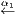…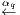[mq],((g0,1,g0,2,…,g0,m0),…,(gq,1,gq,2,…,gq,mq)))
such that for each 0 < i ≤ q and 0 < j ≤ mi we have
gi,j = gi-1,αi(j)gi-1,αi(j)-1…gi-1,αi(j-1)+1
where [m0]←…←[mq] is a q-tuple of NΔop, and (gi,1,gi,2,…,gi,mi) ∈ Gmi for each i = 0,…,q.
If αi(j-1) = αi(j) we interpret the right hand side as the identity element e ∈ G. Note
that considering gi = (gi,1,…,gi,mi) as an element of BGmi, the demanded equality can
be more succinctly written as gi = α*gi-1. The functor G⊗→ NΔop is projection to the
first component. Observe that the preimage of [1] is the discrete ∞-category G[1]⊗ = G.
Observe that the preimage of the map δ1 : [1]→[2];0,1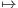0,2 defines the multiplication
on G. Observe that the preimage of the map [1] → [0] determines the identity
element of G. Observe that the associativity condition (xy)z = x(yz) of G is
implied by the fact that the two compositions {0,3}→{0,1,3}→{0,1,2,3} and
{0,3}→{0,2,3}→{0,1,2,3} are equal. Observe that the associativity condition
((wx)y)z = (wx)(yz) = w(x(y(z))) = w((xy)z) = (w(xy))z is also encoded in a similar
way. Observe that for each n, the morphism G[n]⊗→ (G[1]⊗)n induced by the maps
[1]→[n];0,1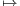i-1,i is an isomorphism.
Present the following example. Let (X,x) be a pointed topological space, and we will
define an ∞-category ΩX⊗. The q-simplicies are tuples
([m0]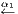…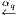[mq],(hI : Δtopj×Δtopmij
→ X)I=(i0≤…≤ij)⊆[q])
where the tuples are required to satisfy:
- hI(Δtopj×{ek}) = x for each corner {ek} = (0,…,0,1,0,…,0) ∈ Δtopmij
(the 1 is in the kth coordinate).
- For every inclusion I′ = (i0′ ≤ … ≤ ij′′) ⊆ I = (i0 ≤ … ≤ ij) ⊆ [q] the
composition hI∘(Δtopj′×Δtopmi′j′
→Δtopj×Δtopmij
) is equal to hI′, where
the Δtopj′→Δtopj is induced by the inclusion I′⊆ I and Δtopmi′j′
→Δtopmij
is induced by αi′j′αi′j′+1αi′j′+2…αij : [mij]→[mi′j′].
Observe that the fibre ΩX[1]⊗ over [1] is the singular simplicial set of the loop space
Sing∙ΩX. More generally, observe that the fibre over [n] is the singular simplicial set of
the subspace of hom(Δtopn,X) consisting of those maps sending the corners
to x. Observe that the morphism ΩX[n]⊗ → (ΩX[1]⊗)n induced by the maps
[1]→[n];0,1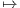i-1,i is a homotopy equivalence but not an isomorphism.
Define monoidal and lax monoidal functors [DAGII, Def.1.1.8]. Define algebras objects
[DAGII, Def.1.1.14]. Define left-tensored ∞-categories [DAGII, Def.2.1.1]. Give example
[DAGII, Exa.2.1.3]. Define module objects [DAGII, Def.2.1.4].
VII. 19.06. Stable ∞-categories. (Vincent)
Two more canonical examples of ∞-categories are the collection of all pointed topological
spaces, and the collection of all complexes of vector spaces. The smash product of a
pointed topological space with the circle S1 (called suspension) corresponds to shifting a
complex of vector spaces. However, while every complex of vector spaces is the shift of
some other complex, not every pointed topological space is the suspension of some other
pointed topological space. Using colimits, there is a notion of smash-product-with-S1 in
any (pointed) ∞-category, and the stable ∞-categories are those in which this procedure
is an equivalence.
This lecture will cover the following:
Define the ∞-category V ec of bounded complexes of vector
spaces.
Define the ∞-category Top* of pointed topological spaces. Define pointed ∞-categories
[Gro, Def.5.1], [DAGI, Def.2.1]. Observe that the zero vector space is both an initial and
final object of V ec. Observe that in fact, any complex homotopy equivalent to zero is
both an initial and final object of V ec. Observe that the point is both an initial and final
object of Top*. Recall that Top is not a pointed ∞-category. Define triangles in
pointed ∞-categories [Gro, p.60], [DAGI, Def.2.4]. Define exact and coexact
triangules in pointed ∞-categories [Gro, Def.5.5], [DAGI, Def.2.4]. Observe that
triangles in V ec with corners K∙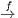K∙′→ Cone(f) are both exact and coexact. In
particular, if 0 → V → V ′→ V ′′→ 0 is an exact sequence of vector spaces, then
V → V ′→ V ′′ is an exact and coexact triangle. Observe that the triangles
X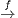Y → Cone(f) in Top* are coexact. Observe that the triangles Fib(f) → X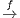Y in
Top
* are exact. Give an example of a coexact triangle in Top* which is not
exact, and an exact triangle which is not coexact. Define kernel and cokernels
in pointed ∞-categories [DAGI, Def.2.6]. Define stable ∞-infinity categories
[Gro. Def.5.11], [DAGI, Def.2.9]. Observe that V ec is stable, but Top* is not
stable.
Define the homotopy category h(C) of an ∞-category C using the construction π(C)
of [HTT], (resp. τ1(C) of [Gro]), [Gro, Prop.1.15]*, [HHT, §1.2.3]*. Observe that
morphisms of h(V ec) are morphisms of chain complexes up to chain homotopy, and the
morphisms of h(Top) are the morphisms of topological spaces up to homotopy. Observe
that h(C) is a 1-category.
Define the suspension Σ and loop Ω functors of a pointed ∞-category admitting pushouts
and pullbacks [Gro, Def.5.8 and preceding text], [DAGI, Rem.3.2]. Explain that in such
an ∞-category C, for any objects X,Y ∈ C0 the set of morphisms homhC(ΣX,Y ) in the
homotopy category is a group, and the set of morphisms homhC(ΣΣX,Y ) is an abelian
group.
State that if C is a stable ∞-category, then hC, equipped with the class of (co)exact
triangles, satisfies the axioms (TR1)-(TR4) [Gro, Thm.5.15], [DAGI, Def.3.1, Thm.3.11].
Prove any or all of these axioms (note the proof of the octahedral axiom (TR4) is
surprisingly simple in this setting).
VIII. 26.06. ∞-Topoi (Georg)
Classical (1-)topoi arise in a number of different ways:
- As generalisations of topological spaces.
- As generalisations of set theory as a logical foundation of mathematics.
- As a class of cocomplete (1-)categories that can be defined using generators
and relations.
Recall that not every ∞-category is cocomplete, that is, not every ∞-category admits
all colimits. A canonical and practically useful way to embed an ∞-category C in a
cocomplete ∞-category is to consider the ∞-category P(C) = Fun(Cop,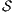) of functors
from Cop to the ∞-category of spaces . Objects of this category are called presheaves
for historical reasons.
In the case that C is the nerve NOp(X) of the partially ordered set Op(X) of
open sets of a topological space X, the category P(NOp(X)) contains a very
interesting full subcategory—the category Shv(NOp(X)) of sheaves. A functor
F : NOp(X)op → is a sheaf if for any open covering U = {Ui ⊆ V }i∈I of some
open V ⊆ X which is closed under intersection (i.e., for all Ui,Uj ∈ U we have
Ui ∩ Uj ∈ U), we can reconstruct F(V ) as the limit limF|NU of the induced diagram
NUop →. Every presheaf can be forced to be a sheaf—there is a functor
P(NOp(X)) → Shv(NOp(X)). In fact, this is the universal functor which forces two
presheaves to be equivalent if for every point x ∈ X they agree on a sufficiently small
neighbourhood.
If we think of P(NOp(X)) as the cocomplete ∞-category generated by NOp(X), then
we can think of the functor P(NOp(X)) → Shv(NOp(X)) as enforcing certain relations,
in this case, the relation that two presheaves “agreeing” on an open cover are in fact
equivalent.
∞-Categories built in this way—cocompletion of some smaller ∞-category and then
forcing relations of a certain kind—arise in a much more general setting than classical
topological spaces.
This lecture will be a more advanced talk, covering material of the speaker’s
choice.
IX. 03.07. ∞-Operads (André)
We have already mentioned that not every topological space is of the form ΩX for some
topological space X. For example, each ΩX is connected. But not every connected
topological space is of the form ΩX either. In the homotopy category, there is a
canonical group structure on ΩX, but the 7-sphere S7 admits such a structure in the
homotopy category (induced by the octonians) but cannot be a loop space
by a Steenrod algebra operations argument. To recognise that ΩX is a loop
space, we recall that for each n, there is a contractible space of “multiplications”
(ΩX)n → ΩX satisfying various conditions. Such an object is called a group like
monoid, over the E1-operad (the operad is the collection of contractible spaces of
multiplications).
In this talk, we work towards understanding the statement of this recognition
principle—that the functor sending a pointed space to its associated grouplike E1-operad
is an equivalence of categories.
This lecture will cover the following: TBA
X. 10.07. Spectra (Alex)
We studied stable ∞-categories in Talk VII and observed that not every ∞-category
is stable. There is however, a universal stable ∞-category associated to any
∞-category. More precisely, for any (presentable) ∞-category C, there is a
colimit preserving functor C →(C) such that the ∞-category FunL(C,D) of
colimit preserving functors from C to any (presentable) stable ∞-category D is
equivalent to FunL((C),D), the category of colimit preserving functors out of
(C).
There are at least two ways to do this. One way is as follows: we would like the loop
functor Ω : C → C to be an equivalence. So one could take the inverse limit of the
diagram …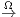C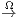C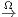C in the ∞-category of ∞-categories. There is a more concrete
description of this ∞-category via spectra. A spectrum, or rather, an Ω-spectrum in
Top is, classically, a sequence of topological spaces (X0,X1,…) with homotopy
equivalences Xi → ΩXi+1. If there is time we may discuss the ∞-category version
of this description. One can think of Xi as the “ith component” in the limit
described above. It is informative to observe that if we replace a complex of
vector spaces K by its shifted truncations (τ≤iK)[i] and canonical morphisms
(τ≤iK)[-i] → (τ≤i+1K)[-i-1] we don’t lose any information. Indeed, the ∞-category of
chain complexes is equivalent to the ∞-category of Ω-spectra of bounded-below-zero
chain complexes.
Another way of constructing the stabilisation of an ∞-category is via excisive functors
from *fin, the category of pointed objects in the smallest sub-∞-category of spaces
containing the terminal object. An excisive functor is one sending pushout squares to
pullback squares. Given such a functor F, we obtain a Ω-spectrum in the classical sense
by defining Xn = F(ΣnS0), and the structural morphisms come from the property
F(ΣnS0) = ΩF(Σn-1S0). Conversely, given any Ω-spectrum one can extend this to a
functor on all of *fin.
This latter procedure, using excisive functors, is where this talk will start. This is also
useful foundation work for learning about Goodwillie calculus. If there is time, we will
discuss the Ω-spectrum point of view and observe that the two constructions produce
equivalent categories.
This lecture will cover the following:
Define reduced and excisive functors [HA, Def.1.4.2.1]. Observe that
for stable ∞-categories, excisiveness is equivalent to exactness, [HA,
Rem.1.4.2.2]. Given the example ℤSing(-)* : Top → Comp(ℤ) of a reduced
excisive functor [HA, Beginning of Section 1.4.2]. Define the ∞-category of
spaces ,
and pointed spaces *, [Exa.XI.8]. Define the ∞-category of finite spaces [HA,
Not.1.4.2.5]. Define spectrum objects [HA, Def.1.4.2.8]. Observe that since the category
of spaces * has finite limits, Sp() is stable [HA, Prop.1.4.2.11, Prop.1.4.2.16,
Cor.1.4.2.17]. Remark that Sp(*) can be identified with the inverse limit of …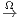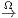
in the ∞-category of ∞-categories, [HA, Prop.1.4.2.24].
* Stabilisation via excisive functors * Stabilisation via spectra * They give the
same thing * They satisfy the universal property * Every cohomology theory is
representable
XI. 17.07. Simplicial model categories (Tommaso)
Simplicial categories and model categories are older notions that predate ∞-categories.
What we have been calling ∞-categories are more properly called quasi-categories, and
they are just one of many equivalent theories of ∞-categories, simplicial categories being
another theory.
A simplicial category is like a 1-category, but instead of a set of morphisms, we have a
simplicial set of morphisms associated to every pair of objects. There is an
equivalence between the theory of quasi-categories and the theory of simplicial
categories in a very precise sense. This equivalence is very useful. There are many
constructions, such as the Yoneda embedding from Talk VIII, which are trivial in the
category of simplicial categories. Another example is the construction of (co)limits.
While (co)limits in ∞-categories are defined by a universal property rather
than a construction, in simplicial categories there is a a concrete construction.
Moving to the world of simplicial categories gives a way to calculate (co)limits in
∞-categories.
While there is a quasi-category associated to any model category, there may
be many model categories associated to a given (presentable) quasi-category.
Choosing a model category giving a quasi-category is analogous to choosing a
basis for a vector space. Model categories also give a language for comparing
various theories—there is a model category of quasi-categories, and a model
category of simplicial categories, and a Quillen equivalence between these model
categories.
This lecture will cover the following:
Define the category Cattop of topological categories, [HTT, Def.1.1.1.6]. Give an
example of a topological category. Define equivalences of topological categories. [HTT,
Def.1.1.3.6]. Define the category CatΔ of simplicial categories, [HTT, Def.1.1.4.1]. Give
an example of a simplicial category. Define equivalences of simplicial categories. [HTT,
Def.1.1.4.4]. Explain how Sing and realisation extend to functors between Cattop and
CatΔ, [HTT, pp.18-19].
Define the simplicial category C[ΔJ] associated to a finite linearly ordered set J,
[HTT, Def.1.1.5.1]. Define the nerve N(C) of a simplicial (resp. topological) category C,
[HTT, Def.1.1.5.5]. Observe that almost all the ∞-categories we have seen in this
seminar (e.g., Top, V ec, , P(C), Ek⊗) are nerves. Define fibrant simplicial
categories [HTT, War.1.2.3.3], and state that their nerves are ∞-categories,
[HTT, Prop.1.1.5.10]. Observe that since both SetΔ and CatΔ admit (normal,
non-∞) colimits, the nerve functor has a left adjoint defined by writing any
simplicial set as a colimit of Δn’s, [HTT, p.23]. Note that the objects of a colimit of
simplicial categories is the colimit of the sets of objects, but unless the colimit is
filtered, morphisms are more difficult to describe because we can’t necessarily find
composable representatives. Define categorical equivalence of simplicial sets [HTT,
Def.1.1.5.14].
Recall quickly, the concept of a model category, [HTT, A.2.1.1]. Define the
model structure on CatΔ using [HTT, Prop.A.3.2.4] (don’t give the general
statement, just give the weak equivalences, say what a weakly saturated class of
morphisms means, and define C0 in this particular case (generators for the
Kan model structure cofibrations are the morphisms ∂Δn → Δn)). Define the
Joyal model structure on SetΔ using [HTT, Thm.2.2.5.1], and mentioning what
the generating cofibrations are. Mention that in the Joyal model structure on
SetΔ, the fibrant objects are precisely ∞-categories, [HTT, Thm.2.4.6.1]. State
that (C,N) determines a Quillen equivalence between SetΔ and CatΔ, [HTT,
Thm.2.2.5.1].
Optional: Prove Yoneda’s Lemma in the setting of simplicial categories, and explain
how one deduces the ∞-categorical statement from the simplicial categorical statement,
[HTT, §5.1.3].
Optional: Associate a simplicial category (and hence ∞-category) to a model category
using hammock localisation. Define “simplicial model category” and observe that
hammock localisation produces a simplicial category equivalent to the subsimplcial
category spanned by fibrant-cofibrant objects.
Optional: State that the homotopy colimit of a simplicial functor is the colimit of its
nerve, [HTT, Thm.4.2.4.1]. Note, this requires unwrapping Lurie’s notion of homotopy
limit in a simplicial category.
Optional: Revisit cartesian fibrations in the language of simplicial categories, [HTT,
Prop.2.4.1.10].
Optional: Revisit monoidal categories in the language of simplicial model categories,
[DAGII, Section 1.6].
Examples of ∞-categories
Example XI.1. Recall that a partially ordered set is a set P0 together with a
antisymmetric, transitive, reflexive binary relation P1 ⊆ P0 × P0. The set NPn of
n-simplicies of the nerve NP of a partially ordered set is
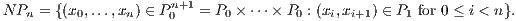
In other words, ordered tuples x0 ≤≤ xn. The face morphisms are
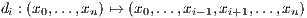
and the degeneracy morphisms are
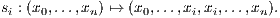
Note that we could also have written NPn as the iterated fibre product P1×P0n =
P1 ×P0×P0P1.
Example XI.2. Recall that a group is a set G1 equipped with a multiplication
G1 × G1 → G1 which is associative, and every element g ∈ G1 admits an inverse.
The classifying space BG of G is the simplicial set whose set of n-simplicies is
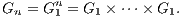
The set G0 has a single element. The face morphisms are
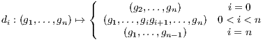
and the degeneracy morphisms are

The nerve of a partially ordered set and the classifying space of a group are special cases
of the nerve of a (small classical) category.
Example XI.3. Recall that a (small classical) category is a set C0 whose elements
are called objects, a set C1 whose elements are called morphisms, four set maps
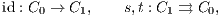
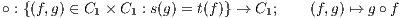
called identity, source, target, and composition respectively, such that the
multiplication is associative (so h∘(g∘f) = (h∘g)∘f when s(g) = t(f),s(h) = t(g)),
for every x ∈ C0 we have s(ex) = t(ex), and the images of C0 are identity elements
(so idt(f) ∘f = f and f ∘ ids(f) = f). The nerve NC of a category is the simplicial
set whose n-simplicies for n ≥ 1 are
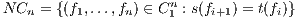
and set of 0-simplices is C0. The face morphisms are
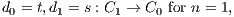
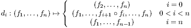
and the degeneracy morphisms are
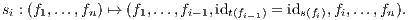
Here is a special case of the nerve of a category.
Example XI.4. The q-simplices of Δop are sequences [m0]←…←[mq] of
non-decreasing morphisms where [m] = {0 ≤ 1 ≤ ≤ m} for m = 0,1,2,….
Boundaries are given by removing an [mi] and composing morphisms, degeneracies
are given by inserting an identity morphism.
Example XI.5. The 2-category Cat of (small classical) categories is the following
simplicial set. An n-simplex is:
- A tuple (C0,…,Cn) of n+1 (small classical) categories (cf. Example XI.3).
- A tuple (Fij : Ci → Cj)0≤i<j≤n of functors.
- A tuple (ηijk : Fik ⇒ Fjk ∘ Fij)0≤i<j<k≤n of natural transformations.
- The natural transformations are required to satisfy the compatibility
condition: for every 0 ≤ i,j,k,ℓ ≤ n the square
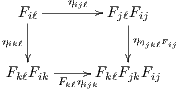
of natural transformations commutes.
Example XI.6. The ∞-category Top of topological spaces is the following simplicial
set. An n-simplex is:
- A tuple (X0,…,Xn) of n+1 topological spaces.
- An tuple of morphisms
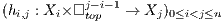
where □topm = {(t1,…,tm) ∈ ℝm : 0 ≤ ti ≤ 1}.
- The morphisms hi,j are required to satisfy the compatibility condition: For every
0 ≤ i < j < k ≤ n, we should have
| hi,k(x,(s1,…,sj-i-1,1,t1,…,tk-j-1)) | |
|
| = hj,k(hi,j(x,(s1,…,sj-i-1)),(t1,…,tk-j-1)) | | |
for all x ∈ Xi, (s1,…,sj-i-1) ∈□topj-i-1, (t1,…,tk-j-1) ∈□topk-j-1.
Notice that a tuple ((X0,…,Xn),(hij)0≤i<j≤n) defines a morphism
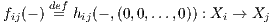 for
each 0
≤ i < j ≤ n. Moreover, for every
i < i1 < i2 < < ik < j the compatibility
conditions imply that

where
ei′ = (0
,…,0
,1
,0
,…,0) is the
i′th standard basis vector of
ℝj-i. So we can interpret
hij as a homotopy between all the possible compositions of the
f’s with
fij at the
“lowest” corner of
□topj-i-1 and
fj-1,j ∘ fj-2,j-1 ∘ fi+1,i+2 ∘ fi,i+1 at the “highest”
corner. The compatibility conditions then can be interpreted as asking that these
homotopies are compatible with all compositions.
The face morphisms are
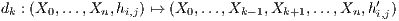
where
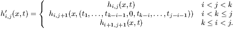
The degeneracy morphisms are
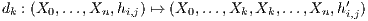
where
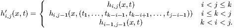
Here, we interpret hi,i as idXi.
Note that every sequence of continuous homomorphisms X0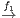…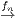Xn defines an
n-simplex: choose hi,j to be the composition Xi×□j-i-1 → Xi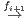Xi+1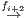…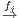X
j (i.e.,
the trivial homotopy).
Example XI.7. Define □vecn to be the (homological) complex of vector spaces
which in degree q, has one basis vector for every sequence of subsets
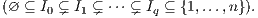
Differentials are alternating sums of the maps induced by forgetting the ith
Ii. Another way to think about this is, the basis vectors of (□vecn)q are the
non-degenerate q-simplicies of N(Subsets({1,…,n})) (which, not coincidentally,
is isomorphic to the n-fold cartesian product (Δ1)n). The map (□vecn)q →
(□vecn)q-1 is the alternating sum of the maps induced by the face morphisms
N(Subsets({1,…,n}))q → N(Subsets({1,…,n}))q-1
A q-simplex of the ∞-category V ec is:
- A tuple (K(0),…,K(q)) of q+1 complexes of vector spaces.
- A tuple of morphisms
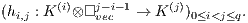
- The morphisms hi,j are required to satisfy the compatibility condition:
For every a,b ≥ 1, the restriction of hi,i+a+b to K(i)⊗□veca-1⊗□vecb-1 ⊆
K(i)⊗□veca+b-1 is the composition hi+a,i+a+b ∘ (hi,i+a ⊗ id□vecb-1). Here,
the inclusion □veca-1⊗□vecb-1 ⊆□veca+b-1 is induced by the identification
of {1,…,b-1} with {a+1,a+2,…,a+b-1} and the morphism
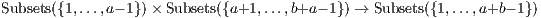
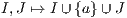
As in the case of topological spaces, notice that given a tuple as above, for each
0 ≤ i < j ≤ n we have a morphism fij : K(i) → K(j) induced by the inclusion
□vec0 ⊆□vecj-i-1 corresponding to the empty set (∅ ⊆{1,…,n}). The compatibilities
enforce that the inclusions □vec0 ⊆□vecj-i-1 must be equal to the various compositions
K(i) → K(i1) →…K(j) of the f’s.
For example, hi,i+2 is a chain homotopy between fi,i+2 : K(i) → K(i+2) and
fi+1,i+2 ∘ fi,i+1 : K(i) → K(i+1) → K(i+2). The other h’s can be interpreted as higher
chain homotopies between the chain homotopies.
Example XI.8. Define □n = (Δ1)n to be the n-fold cartesian product. Note
there is a canonical isomorphism □n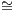N(Subsets({1,…,n}).
An n-simplex of , the ∞-category of spaces is:
- A tuple (K(0),…,K(q)) of q+1 Kan complexes.
- A tuple of morphisms
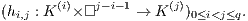
- The morphisms hi,j are required to satisfy the compatibility condition:
For every a,b ≥ 1, the restriction of hi,i+a+b to K(i)×□a-1×□b-1 ⊆
K(i)×□a+b-1 is the composition hi+a,i+a+b ∘ (hi,i+a × id□b-1). Here,
the inclusion □a-1×□b-1 ⊆ □a+b-1 is induced by the identification of
{1,…,b-1} with {a+1,a+2,…,a+b-1} and the morphism

As in the case of topological spaces, notice that given a tuple as above, for each
0 ≤ i < j ≤ n we have a morphism fij : K(i) → K(j) induced by the inclusion
□0 ⊆□j-i-1 corresponding to the empty set (∅ ⊆{1,…,n}). The compatibilities
enforce that for each subset {i1,…,ik}⊆ I, the morphism associated to the
inclusion Δ0 ⊆□j-i-1 corresponding to I must be equal to the composition
K(i) → K(i1) →…K(j) of the f’s.
For example, hi,i+2 is a homotopy between fi,i+2 : K(i) → K(i+2) and
fi+1,i+2 ∘ fi,i+1 : K(i) → K(i+1) → K(i+2). The other h’s can be interpreted as higher
homotopies between the homotopies.
References
[Fri] Friedman, Greg. An elementary illustrated introduction to simplicial sets.
https://arxiv.org/abs/0809.4221
[Hat] Hatcher, Allen. Algebraic Topology.
[Lur] Lurie, Jacob. What is...an ∞-category?
http://www.ams.org/notices/200808/tx080800949p.pdf
[HA] Lurie, Jacob. Higher algebra.
http://www.math.harvard.edu/~lurie/papers/HA.pdf
[HTT] Lurie, Jacob. Higher topos theory.
http://www.math.harvard.edu/~lurie/papers/highertopoi.pdf
[DAGI] Lurie, Jacob. Derived algebraic geometry I.
http://www.math.harvard.edu/~lurie/papers/DAG.pdf
[DAGII] Lurie, Jacob. Derived algebraic geometry, II.
http://www-math.mit.edu/~lurie/papers/DAG-II.pdf
[May] May, Peter. Simplicial objects in algebraic topology.
[Gro] Groth, Moritz. A short course on ∞-categories.
https://arxiv.org/abs/1007.2925
[Wei] Weibel, Charles A. An introduction to homological algebra.